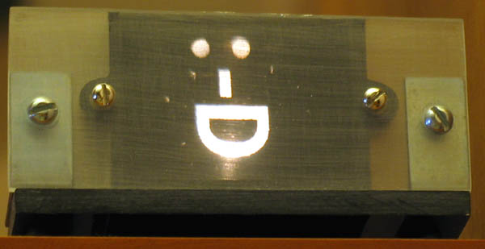
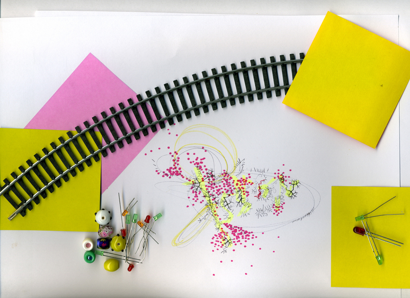

people doing strange things with electricity
The 1492nd dorkbot-nyc meeting took place at 7pm on Wednesday, December 5th, 2007 at Location One in SoHo.
The meeting was free and open to the public. People brought snacks to share.
Also: dorkbot t-shirts! $15 in person, $17 online. Cute colors, cut cuts. Profits go to support our host, Location One!
It featured the humid and tropical:
Some images from the meeting: douglas's pics | roberto tobar's pics

Ted Johnson: Build Your Own Secret Laboratory
I will talk about how to build your own secret laboratory in a small NYC-sized space and at a low cost, and thereby produce silly and useless gadgets such as those shown at my web page:
http://users.rcn.com/ted.johnson
Fiona Hallinan (aka Fink): Playskip
I would like to tell a story about my first interactive experience between computers and people, which occurred when I was twelve years old. In some roundabout way I hope this will introduce to you an installation I made as part of my Msc in Multimedia Systems this year, called Playskip. I will also introduce some past work of mine if it seems right to.
http://www.thefirst47.com/playskip.html
Andrew Schneider: Click. Buzz. Drone (experimental devices for performance)
My multidisciplinary work attempts to critically investigate human and technological interdependence. I see this interdependence as both emotional and physical. We are all infinitely removed from everything, everyone, and more so, from ourselves. Our inners do not connect to our outers with any sort of transparency. Language separates us from the experience of the real. All of us is filtered. We are performing rather than living our lives everyday. We as humans seem to have countered this predicament with technology. I am interested in highlighting this concept through the magnification and extension of the themes of inability and dependence. EXPERIMENTAL DEVICES for PERFORMANCE reifies this notion by placing technological media over the body, masking the layer that masks the layer that interprets our corporeal devices of communication (our senses). EDP is a suite of five wearable devices examining our state of communication. Small screens cover and confuse the "truths" of the mouth and the eyes. Sensor-embedded shoes map footfalls to soundtracks. A camera-coated hat only displays its cameras' signals when the wearer's head comes in contact with a television. A Polaroid picture is taken every time someone blinks. In order to control the media, a performer must also control his/her body in artificial ways. The performer controls the media controls the performer.
http://andrewjs.com
Next meeting: 02.jan.2008